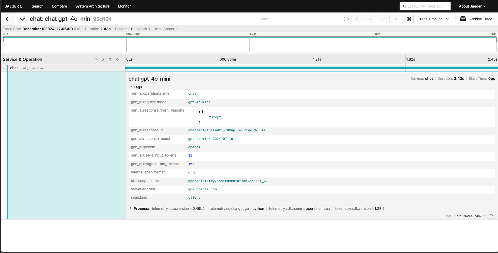

可观测性与全链路追踪
模型上线后最大的变化是：你的系统会以一种传统服务不会有的方式"静默失败"——HTTP 200，延迟正常，但回答完全跑偏。通用 APM 只看到请求成功了，看不到内容是错的。你需要的不是更多仪表盘，而是专为 LLM 链路设计的全链路追踪和四个生产信号。一句话记住分工：离线比模型，线上比昨天。
传统 APM 关心"请求有没有成功返回"，LLM 可观测性关心"返回的内容对不对"。一次用户请求可能经过意图分类、RAG 检索、工具调用、多轮对话，每一步都可能静默出错。全链路 trace 把这条路径上每一步的输入、输出、模型、延迟、token、成本都串起来，让你能像查慢查询一样查"坏回答"。
token / 延迟 / 成本"] style TRACE fill:#fff8e6,stroke:#d4a017 style SIG fill:#eaf3de,stroke:#639922
为什么传统 APM 不够用
想象你是一家外卖平台的工程师。过去你盯的是「骑手有没有按时取到餐」——请求成功、超时、报错，这些是传统监控的全部。现在平台换了新玩法：每个订单派给一个「AI 配送顾问」，它负责给骑手写推荐路线。于是奇怪的事情发生了：系统的请求成功率依然 99.9%，但用户开始投诉「顾问给的路线是错的」。传统监控看到的是「餐都送到了」，看不到的是「送到了错的地方」。LLM 应用就是这个 AI 配送顾问——传统 APM 能告诉你管道通不通，但管不了水质对不对。
你已经有 Datadog、Prometheus、Grafana，为什么还要单独搞 LLM 可观测性？因为 LLM 系统的失败模式和传统服务根本不一样：
| 维度 | 传统微服务 | LLM 应用 |
|---|---|---|
| 失败的定义 | 5xx / 超时 / 异常退出 | HTTP 200 但回答跑偏、幻觉、拒答、格式错 |
| 延迟分布 | 相对稳定，p99 ≈ p50 × 2 | 跨度极大，长输出 / 工具调用 / RAG 可达 10× 以上 |
| 成本模型 | 按请求 / 按实例，固定可预测 | 按 token，同一请求因上下文长度不同差几倍 |
| 版本漂移 | 只有自己发版才会变 | 供应商静默更新模型，行为突变无通知 |
| 质量信号 | 错误率就够了 | 错误率 = 0 也可能答得全错 |
先对齐三个术语：Span、Trace、Trace ID
看任何 LLM 可观测性文档，最常出现的三个英文词是 Span、Trace 和 Trace ID。它们的关系可以类比成一次出差的全程记录。
- Span（跨度）——「一次独立的步骤」。就像出差记录里的一格：「打车去机场」是一格，「过安检」是一格，「登机」是一格。在 LLM 系统里，一次"LLM 调用"就是一个 Span，一次"向量检索"也是一个 Span。每个 Span 记录这件事的开始时间、结束时间、干了什么（属性，attribute）、有没有出错。
- Trace（链路）——「一整次请求的所有步骤串起来」。就像把「打车 → 安检 → 登机 → 飞行 → 落地」按顺序连成一条完整的时间线。Span 之间是父子关系：一个请求这个父 Span 下面，挂着「意图分类」「RAG 检索」「生成」等多个子 Span。
- Trace ID（链路编号）——「这次出差的订单号」。它是一个 16 字节的随机字符串，从头到尾贯穿所有 Span。排查问题时，你拿 Trace ID 一搜，就能把这整条时间线捞出来，不管日志散落在几个服务里。
这个类比有两个工程上的直接推论。第一，Trace ID 必须在系统边界就生成并一路透传——用户在网关发起请求时生成，然后随着调用栈一层层传给 RAG、传给模型网关、传给工具服务。任何一个环节断了透传，这条链就在那个环节断开，之后的问题就只能靠猜。第二，Span 是嵌套的而不是平铺的——「生成」这个 Span 里还可以再嵌「调用模型」「解析 JSON」两个子 Span，层级结构决定了你排查时能不能从上到下逐层缩小范围。
全链路 Trace：LLM 版的慢查询日志
传统服务的 trace 记录的是函数调用栈和服务间跳转。LLM 应用的 trace 需要记录完全不同的东西——它更像是"推理过程的黑匣子"。
一条 Trace 要记录什么
一个完整的 LLM trace 由多个 Span 组成，每个 Span 对应链路中的一个步骤。关键不是记多少，而是每个 Span 都要同时记录输入和渲染后的输出——不只是参数模板，而是变量填充后真正发给模型的那个 prompt。
| 字段 | 为什么必须记 |
|---|---|
| 原始用户输入 | 用户实际说了什么，和渲染后 prompt 对比能发现拼装 bug |
| 渲染后 prompt | 系统提示 + few-shot + 检索上下文 + 用户消息拼完后的完整文本。出问题时这是第一现场 |
| 模型与版本 | gpt-4o-2024-08-06 还是 gpt-4o-2024-05-13？同一名下行为不同。供应商换版时这是唯一线索 |
| 输入 / 输出 token 数 | 成本归因和上下文溢出诊断的基础 |
| 延迟（首 token / 总） | 首 token 延迟影响用户感知，总延迟影响吞吐。两者分不开就无法定位瓶颈 |
| 工具调用与检索结果 | Agent 链路里，工具返回了什么直接决定下一步。不记就是黑盒 |
| 最终输出 | 模型返回的原始文本，以及经过后处理（格式化 / 脱敏）后给用户看的内容 |
| 质量分 | 对这个输出的自动评分（见下文）。没有质量分的 trace 只能事后人工排查 |
手算一次：一条 Trace 里到底有什么
光说"每个 Span 都记录这些字段"还是抽象。下面把一个典型企业 RAG 问答请求的 trace，按 Span 摊成一张表。这个例子用到的数字是示意性的，真实系统请以你自己的 trace 为准，但结构是一样的。
| Span | 父 Span | 持续时长 | 关键记录 |
|---|---|---|---|
| request（根） | — | 2.3s | Trace ID：a91f…3c2e；会话 ID；用户 ID；工作流标签 rag_qa |
| guardrail_input | request | 28ms | 命中规则数 0；注入风险分 0.03 |
| query_rewrite | request | 210ms | 模型 gpt-4o-mini；输入 42 token；输出 31 token |
| vector_search | request | 95ms | top-10 召回；平均相似度 0.62；索引版本 idx-v7 |
| rerank | request | 340ms | 重排模型 bge-reranker-v2-m3；top-3 相似度 [0.81, 0.78, 0.66] |
| generate | request | 1.55s | 模型 gpt-4o-2024-08-06；温度 0.3；输入 2400 token；输出 380 token；首 token 0.9s |
| guardrail_output | request | 40ms | PII 命中 0；schema 校验通过；质量分 8.4 |
这张表就是一次"正常"请求的完整画像。注意几个能直接读出结论的点：generate 的 1.55s 里首 token 就占了 0.9s——如果用户说"感觉特别慢"，问题在模型侧排队或 prefill，而不在生成；vector_search 平均相似度只有 0.62——如果你平时的基线是 0.7，这个值就提示检索质量在下降；2400 输入 token 里，系统提示和 RAG 上下文占了大头——这为 成本工程里的优化提供了第一手依据。没有 trace，这些结论全靠猜；有了 trace，它们只是"看一眼表"的事。
Trace 的层级结构
复杂的 Agent 链路可以有十几层嵌套，trace 需要清晰的层级来保持可读性：
权威图：一次 LLM 调用在 Jaeger 里长什么样
上面讲的 Span 嵌套结构，在真实工具里是什么样子？OpenTelemetry 官方博客用一张 Jaeger（开源的分布式追踪系统）截图，展示了插桩了 OpenTelemetry 之后，一次 LLM 对话请求在追踪后端里的真实形态。这是"标准的 trace 长什么样"的官方第一手证据，新手值得花一分钟读懂它。

这张截图乍看是一张界面图，但内行看的是三件事：① 最左边是一棵 span 树——从上到下是父到子，一次请求被拆成了若干层级的步骤，这正是上一节讲的"嵌套结构"在真实系统里的呈现；② 每一行 span 都有明确的名称和耗时——哪些步骤慢、哪些步骤快一眼可见，慢的那一行就是你下一步点进去看的入口；③ 点击某个 span，右边会展开它的属性（attributes）——按 OpenTelemetry 的 GenAI 语义约定，这里会记录模型名、输入输出 token 数、temperature 等标准字段，这些字段正是上一节"一条 Trace 要记录什么"表格的落地形式。官方博客原文把这种结构称为 Chat trace：一次对话不是一次调用，而是被插桩库自动拆成多个可观测步骤。你不需要现在就掌握 Jaeger 的每一个按钮，只需要建立一条印象：标准化的 trace 工具会把"一次请求"展开成"一棵有名字、有耗时、有属性"的树，而你要练的是"从树叶往树根走"的排查姿势。
用 Trace 排查一次坏回答：把动线固化下来
光有 trace 不等于会排查。真正能提效的是把"从投诉到定位"这条动线写成 runbook，让任何一个值班同学都能照着走。下面是一个真实感很强的例子：用户说"它引用了一份三年前的文档"。
这个例子最有价值的地方在于它避免了一次错误归因。如果没有 trace，工程师大概率会先去改 prompt（"加一句请优先引用最新资料"），改完发现没用，再改一版，最后才想到去看索引。有了 trace，这条弯路直接省掉。把常见症状和对应的第一落脚点整理成一张表，排查效率还能再提一档：
| 用户描述的症状 | 第一个该看的 Span | 最常见的根因 |
|---|---|---|
| "答非所问" | 意图分类 / 查询改写 | 改写把问题的意思改变了，后面全链路都在回答一个错的问题 |
| "引用了过时或错误的资料" | 向量检索 + chunk 元数据 | 索引陈旧、chunk 版本未更新（见 RAG 生产运维） |
| "格式乱了 / 下游解析失败" | 出口校验 Span + 模型版本字段 | 供应商静默更新模型，输出风格漂移 |
| "它拒绝回答" | 入口护栏 Span + 检索 Span | 护栏误杀，或检索结果为空导致模型说"没有相关信息" |
| "特别慢" | 延迟分段字段 | 先分清是排队、首 token、生成还是检索慢 |
| "同一个问题两次答得不一样" | 采样参数 + 模型版本 | temperature 不为 0，或供应商正在灰度新版本 |
四个生产信号：能预测事故的仪表盘
传统服务盯 CPU、内存、QPS、错误率。LLM 应用需要盯四个完全不同的信号，它们能在用户大量投诉之前就给你预警。
每次请求的输出质量自动评分。来源可以是 LLM-as-Judge、规则校验、用户反馈（点踩率）。这是唯一能捕捉"答了但答错了"的信号。质量分持续下降 = 事故前兆。
不是平均延迟，是 p95 / p99。LLM 延迟的长尾极长（RAG 检索慢一步、输出特别长、工具调用多一轮都会拖长尾）。用户感知到的是"偶尔很慢"，只有 p95 能反映。
错误率是技术失败（API 报错、超时），拒答率是模型说"我无法回答"。两者要分开看：错误率高是基础设施问题，拒答率高是模型行为漂移（过度对齐、prompt 被污染）。
按 token 算到每一笔请求。成本突增通常是 bug 的信号——系统提示变长了、RAG 多塞了上下文、fallback 被频繁触发——而不是用户真多了那么多。详细做法见推理成本工程。
信号一：质量分怎么来
质量分是四个信号里最难也是最有价值的一个。没有它，你只能等用户投诉。有三种实现路径，实践中通常组合使用：
| 方式 | 怎么做 | 优缺点 |
|---|---|---|
| 规则校验 | 检查输出是否包含必需字段、格式是否合法、长度是否在范围内、是否包含禁用词 | 便宜、实时。但只能抓格式问题，抓不了语义错误 |
| LLM-as-Judge | 用另一个模型（或同模型不同 prompt）对输出打分。设计评分维度和 rubric，异步执行 | 能评估语义质量。但有成本、有延迟、Judge 本身也有偏差 |
| 用户反馈 | 点赞 / 点踩 / 重新生成按钮。最真实的信号，但覆盖率低（大部分用户不点） | 金标准但稀疏。适合做 LLM-as-Judge 的校准锚点 |
关于 LLM-as-Judge 的方法论和局限性（位置偏差、冗长偏差、自我偏好等），详见 评估方法。线上质量分不需要学术级精度，它要的是稳定性——同一个Judge 同一个 prompt，今天打 8 分明天也打 8 分，分数变了就是信号变了。
信号二：延迟要拆开看
一个 LLM 请求的延迟不是铁板一块，它至少包括：
Time To First Token"] TTFT --> GEN["生成延迟
每 Token × 数量"] GEN --> POST["后处理
格式化 / 脱敏 / 校验"] style TTFT fill:#fff8e6,stroke:#d4a017 style GEN fill:#eaf3de,stroke:#639922
如果 RAG 链路里还有检索和重排，还要加上这两步的延迟。p95 飙高时，先看是哪一段涨了——是排队（容量问题）、首 token（模型负载）、生成（输出变长了）、还是检索（向量库慢了）。不拆开就是一笔糊涂账。
信号三：拒答率——LLM 独有的故障信号
传统服务没有"拒答"这个概念。但 LLM 会说"作为 AI 我无法回答这个问题"、"我没有足够的信息"。适度的拒答是安全设计，但拒答率突然上升通常是 prompt 或模型出了问题：
- 系统提示被改了：加了几条限制条件，副作用是过度拒答。
- 模型版本变了：供应商推了新版本，对齐策略变了，之前能答的现在不答了。
- RAG 检索失败：没检索到上下文，模型说"我没有相关信息"——这其实是检索的问题，不是模型的问题。
- Guardrail 过度拦截：入口护栏误杀正常请求。详见 护栏与输出校验。
拒答率是最容易被忽略的信号，因为它不会报错、不会超时，只是用户默默离开。把它和质量分放一起看：如果质量分在降但拒答率没变，问题在生成质量；如果拒答率也在涨，问题更可能出在入口或检索。
信号四：每请求成本作为告警指标
成本不只是财务指标，它也是技术健康指标。一个请求的平均成本在一段时间内应该是稳定的。成本突增几乎总是意味着某个环节出了问题：
- 系统提示膨胀：有人往 system prompt 里加了太多内容，每次请求多烧几千 token。
- RAG 上下文过长：检索策略改了，每次塞的 chunk 数量或长度变大了。
- 重试风暴：上游模型超时，fallback 到更贵的模型，还重试了好几次。
- 对话历史没有截断：多轮对话把整个历史都带上，越聊越贵。
成本工程的深度做法见 推理成本工程。这里强调的是：成本告警要和告警系统打通，不要只在月底看账单才发现。
离线评估 vs 线上监控：各管一段
一个常见的困惑是：我已经有离线评估了，为什么还要线上监控？两者的分工很清楚：
| 维度 | 离线评估 | 线上监控 |
|---|---|---|
| 数据 | 人工策展的测试集（几十到几百条） | 真实用户请求的 trace 聚合 |
| 对比对象 | 模型 A vs 模型 B / prompt v1 vs v2 | 今天 vs 昨天 / 本周 vs 上周 |
| 指标 | 准确率 / F1 / BLEU / 人工评分 | 质量分趋势 / p95 / 拒答率 / 单请求成本 |
| 触发动作 | 选模型、改 prompt、阻断发布 | 告警、回滚、排查 |
| 频率 | 每次变更前跑一轮 | 持续运行，分钟级聚合 |
离线评估的方法论详见 评估方法。离线评估关注幻觉的成因和测量，线上监控关注幻觉有没有在生产中恶化，两者的衔接点在 幻觉 一节有深入讨论。
告警设计：别等用户来报
有了四个信号，下一步是设置告警。LLM 告警的难点在于信号噪声比低——质量分天然波动，直接设阈值会频繁误报。实践中有几个有效模式：
- 同比环比而不是绝对阈值：不设"质量分 < 7 就告警"，而是"质量分比昨天同时段低 15% 就告警"。LLM 流量有明显的时段模式，绝对阈值不分时段。
- 滑动窗口 + 异常检测：用过去 7 天的滑动窗口建立基线，当前值偏离 2-3 个标准差才告警。比固定阈值鲁棒得多。
- 组合条件：单个信号波动可能是噪声，两个信号同时恶化才是事故。"质量分下降 + 拒答率上升"比单独任何一个都可信。
- 分层告警：p95 延迟涨 10% 是提示，涨 50% 是告警，涨 200% 是 page。不是所有异常都需要半夜叫人起来。
工具选型
LLM 可观测性工具已经比较成熟，核心区别在于 trace 的数据模型是否为 LLM 链路定制：
| 工具 | 定位 | 特点 |
|---|---|---|
| Langfuse | 开源 LLM 可观测性 | 自托管或云托管，trace 模型专为 LLM 设计，支持评分、prompt 管理、评估流水线 |
| LangSmith | LangChain 官方平台 | 与 LangChain / LangGraph 深度集成，trace 自动埋点，适合 LangChain 用户 |
| Arize Phoenix | 开源 LLM + ML 可观测性 | 支持 LLM trace 和传统 ML 漂移检测，适合混合栈 |
| OpenTelemetry + GenAI 语义约定 | 标准协议 | 用 OTel 的 GenAI semantic conventions 记录 LLM span，可对接任意后端。灵活但需要更多配置 |
选型建议：如果你的 LLM 链路是基于 LangChain 生态，LangSmith 的接入成本最低；如果需要自托管或数据不出域，Langfuse 是最成熟的开源选择；如果团队已有 OpenTelemetry 基础设施，直接用 GenAI 语义约定扩展即可，不必引入新系统。
展开：采样、存储与隐私——全量记 prompt 的三个现实约束
"每个 Span 都记录渲染后的完整 prompt"听起来天经地义，真做起来会立刻撞上三堵墙。这三个问题不解决，trace 系统上线三个月就会被叫停。
第一堵墙：存储成本。一个 RAG 请求的渲染后 prompt 动辄 3000-5000 token，按 UTF-8 中文估算就是几 KB 到十几 KB。日均百万请求的系统，光 prompt 文本一天就能写出几十 GB。常见的解法是分层采样：正常请求按比例采样（例如 1%-5%）只留元数据，但异常请求 100% 全量留——质量分低于阈值的、被护栏拦截的、报错的、延迟进入 p99 的，这些恰恰是你事后需要看的。再配合冷热分层：热存储保留 7-14 天供排查，之后转对象存储或直接丢弃。
第二堵墙：隐私合规。prompt 里几乎必然包含用户输入，RAG 上下文里还可能夹带内部文档的 PII。把这些原样落到一个全公司都能查的 trace 看板上，本身就是一个数据泄露面。做法有三层：入库前脱敏（复用 出口护栏的 PII 检测器，对 trace 内容跑一遍）、字段级权限（元数据人人可看，prompt 与输出正文按角色授权）、保留期限（明确 trace 的 TTL 并真的执行删除）。特别提醒：脱敏要在写入 trace 之前做，不是在展示时做——一旦落盘就已经泄露了。
第三堵墙：采样会破坏统计。如果你对正常请求采样 1%、对异常请求 100%，那么直接在 trace 上算出来的"错误率"会被严重高估。解决办法是指标和明细分开两条路：四个生产信号走全量的聚合指标（只上报数值，不上报文本，成本极低），trace 明细走采样。用聚合指标看趋势，用采样明细做排查，两者不要混着算。
把这三点写进设计里，trace 系统才可能长期活下去。反过来，很多团队"可观测性项目失败"的直接原因就是：一开始全量记录，两个月后账单超过了模型调用本身，于是整个功能被关掉。
展开：用 OpenTelemetry GenAI 语义约定手动埋点
OpenTelemetry 社区正在制定 GenAI 的语义约定（semantic conventions），定义了 LLM 调用应该记录哪些标准字段。以下是一个最小埋点示例：
from opentelemetry import trace
from opentelemetry.semconv.trace import SpanAttributes
tracer = trace.get_tracer("llm-app")
@tracer.start_as_current_span("llm.generate")
def generate(user_input: str, context: str, model: str) -> str:
span = trace.get_current_span()
# 记录 GenAI 语义约定字段
span.set_attribute("gen_ai.system", "openai")
span.set_attribute("gen_ai.request.model", model)
span.set_attribute("gen_ai.request.temperature", 0.7)
span.set_attribute("gen_ai.prompt", f"Context: {context}\nQuestion: {user_input}")
response = llm_client.chat.completions.create(
model=model,
messages=[
{"role": "system", "content": SYSTEM_PROMPT},
{"role": "user", "content": f"Context: {context}\nQuestion: {user_input}"},
],
)
# 记录输出和 token 用量
output = response.choices[0].message.content
span.set_attribute("gen_ai.response.text", output)
span.set_attribute("gen_ai.usage.input_tokens", response.usage.prompt_tokens)
span.set_attribute("gen_ai.usage.output_tokens", response.usage.completion_tokens)
return output这样埋点后，任何支持 OTel 的后端（Jaeger、Tempo、Datadog 等）都能展示 LLM 调用链路。Langfuse 和 Arize Phoenix 也支持接收 OTel 格式的 trace。注意：gen_ai.* 这类语义约定字段仍在演进中，接入前以 OpenTelemetry 官方最新文档为准。
展开：怎么决定采样率——一个两步决策法
很多人问"trace 采样率设多少合适？"。这个问题没有一个普适数字，但有一个两步决策法可以快速收敛，避免拍脑袋。
第一步，先算"你必须完整保留的流量"有多大。把必须全量保留的异常类型列出来：质量分低于阈值、被护栏拦截、API 报错、延迟 p99、供应商版本变化导致的首次请求。按你当前业务量估算这些加起来占多少比例——常见结果在 1%-5% 之间。这部分无论多少都必须 100% 保留，它不参与采样率的讨论。
第二步，用预算反推正常流量的采样率。假设你每月愿意为 trace 存储付 X 元，已知单条完整 trace 平均占用 Y MB（含 prompt 文本），用"预算 ÷ 单条成本"算出能存多少条，再除以正常流量总数，就是采样率。如果结果低于 0.1%，说明要么预算不够、要么该上"只存元数据不存正文"的压缩模式，而不是硬撑采样率。
还有一个容易漏的实践点：采样率不要全局统一。高价值工作流（涉及支付的 Agent、金融问答）采样率可以显著高于闲聊类功能。采样策略按 trace 的标签（工作流维度）来配置，比全局一个数字合理得多。这又回到了成本工程里的四维归因思想——先把流量分好类，再决定每类怎么采样。
分阶段建设：不要一上来就全都要
看到这里你可能已经有一份很长的清单了。但把 trace、四个信号、LLM-as-Judge、告警、采样策略一次性全建起来，通常的结果是半年后什么都没上线。可观测性的建设有明确的优先级顺序——先让自己能查，再让自己能看，最后才是能被提醒。
几条来自实践的取舍建议：
- 第一周只做一件事：能反查。哪怕告警、看板全没有，只要出问题时能拿会话 ID 翻出完整 prompt 和模型版本，你就已经领先大多数团队了。反过来，一个漂亮的看板配上查不到明细的 trace，排查时一点用都没有。
- 质量分从规则型开始，不要一上来就上 Judge。"输出是否为合法 JSON""是否包含引用来源""长度是否在合理区间"这些规则几乎零成本，却能抓住相当比例的线上问题。LLM-as-Judge 应该在你已经有稳定的规则基线之后再加。
- 告警晚一点上没关系，但基线要早点建。告警的本质是"和基线比"，而基线需要时间积累。第一个月即使不发告警，也要把指标持续记下来，否则第二个月想设告警时会发现没有历史数据可参照。
- 闭环阶段最容易被跳过，但它决定长期价值。把线上发现的坏例定期回流到离线评估集，你的 golden set 才会越来越像真实流量。只监控不回流，评估集会和生产越来越脱节。
要点速查
- 本质：LLM 系统会 HTTP 200 地静默失败，通用 APM 完全看不到。需要专为 LLM 链路设计的全链路 trace 和质量信号。
- 三个术语：Span 是一次步骤，Trace 是一条完整时间线，Trace ID 是时间线的编号，必须从系统边界一路透传。
- Trace 必须记录：原始输入、渲染后 prompt、模型与版本、token 数、首 token 延迟 / 总延迟、工具调用结果、最终输出、质量分。
- 四个生产信号：质量分（答得对不对）、p95 延迟（快不快）、错误与拒答率（能不能答）、每请求成本（有没有 bug）。交叉看才能定位故障域。
- 分工：离线比模型，线上比昨天。离线评估选模型、改 prompt；线上监控盯趋势、防事故。
- 告警设计：用同比环比而非绝对阈值，组合条件降噪，模型版本变更本身也要告警。
- 排查动线要固化：把"症状 → 第一个该看的 Span"写成 runbook，避免"先改 prompt 试试"这种错误归因。
- 采样三原则：正常请求低比例采样、异常请求全量保留；指标全量聚合、明细采样存储；脱敏必须在写入前做而不是展示时做。采样率按工作流标签分档，不全局一刀切。
- 建设顺序：先能反查（trace 骨架）→ 再能看趋势（便宜的规则型信号）→ 然后才是告警 → 最后是 Judge 与坏例回流闭环。
- 常见坑：供应商静默换模型版本不记录 → 无法排查；只看错误率不看拒答率 → 漏掉对齐漂移；只看平均延迟不看 p95 → 漏掉长尾体验问题；只看聚合曲线不开单条 trace → 能发现事故却定位不了；全量存 prompt 导致存储账单反超模型账单，最后整个系统被关掉。
面试高频问题：LLM 可观测性
面试回答不要把可观测性说成“多接一个 trace 平台”，而要围绕质量是否达标、故障能否归因、风险能否止损展开。下面的答案按“先给结论，再给证据，再给动作”的顺序组织，适合直接背诵。
Q1：传统 APM 为什么无法覆盖 LLM 的质量失败？
标准回答：传统 APM 主要观测请求是否到达、是否报错和耗时是否超阈值，成功标准是 HTTP 状态与服务健康；LLM 的核心失败却可能是 HTTP 200 下的幻觉、答非所问、拒答、引用错误或结构化输出不合法。因此要把“业务质量”纳入观测：用 Trace 串起 prompt、检索、模型、工具和后处理，用规则、用户反馈或异步 Judge 生成质量信号，再与延迟、拒答率和成本关联分析。
追问：为什么不能只把答案写进日志？日志是孤立事件，Trace 才能保留跨服务的因果顺序与父子关系；没有检索结果、模型版本和 prompt 快照，就无法判断是数据、编排还是模型行为导致质量下降。
Q2：如何设计 LLM Trace Schema？字段、隐私、采样怎么取舍？
标准回答：先定义统一的根 Trace 和类型化 Span，再按“可关联、可归因、可止损”设计字段：trace_id、span_id、父子关系、租户/工作流标签、时间与状态；输入侧记录原始输入摘要和渲染后 prompt 的版本/哈希，推理侧记录 provider、精确模型版本、参数、输入输出 token、TTFT、TPOT、总耗时；RAG 记录查询改写、索引版本、候选 ID、相似度与过滤结果；Agent 记录工具名、参数摘要、返回状态、重试和审批；输出侧记录原始/后处理状态、校验结果、拒答原因和质量分。
隐私与采样：敏感文本在写入前脱敏或只存哈希/摘要，正文按字段和角色授权并设置 TTL；全量上报低成本的指标聚合，明细采用分层采样，错误、低质量、被拦截、p99 延迟和新模型首批请求保留 100%。指标统计必须使用全量分母，不能把“异常全量、正常抽样”的 Trace 直接当错误率分母。
追问：为什么要同时保留模型名和精确版本？
模型名只能说明调用了哪一类服务，不能解释供应商灰度或静默更新造成的行为变化。版本、prompt 版本、索引版本和工具 schema 版本一起记录，才能做变更前后分桶比较，并支持精确回滚。
Q3：质量下降但 HTTP 200，排障路径是什么？
标准回答：先固定时间窗、租户、工作流和模型版本，确认是否为真实回归而非 Judge 或流量结构变化；再按 Trace 从出口向叶子排查：① 输出校验、引用和拒答原因；② 最终 prompt 与 prompt 版本；③ 检索召回、重排、文档版本和权限过滤；④ 模型版本、参数、token 与工具返回；⑤ 对比健康基线并抽样复现。每一步都做一个可证伪的对照实验，定位后先止损（回滚、降级或关闭问题路由），再修复并把坏例回流离线评测集。
排障 checklist：Trace ID 是否完整透传？质量分的分母是否稳定？是全量质量下降还是某租户/模型/版本分桶下降？检索证据是否存在且新鲜？prompt、索引、工具 schema 是否刚变更？异常是否伴随 TTFT、TPOT、输出长度、拒答率或成本变化？
Q4：p95、TTFT、TPOT、拒答率、单请求成本如何联动定位？
标准回答：先把端到端时延拆成排队/检索/重排/TTFT/解码/后处理。TTFT 高通常看排队、prefill、输入上下文和上游连接；TPOT（每输出 token 的时间）高通常看解码吞吐、并发、限流和输出长度；p95 高但 TTFT、TPOT 都稳定，要查检索、工具或后处理长尾。再把成本按输入 token、输出 token、重试和模型路由分解：成本上升伴随输入 token 上升，多半是 prompt/RAG 上下文膨胀；伴随输出 token 上升，多半是生成变长或停止条件失效；伴随重试上升，则查超时与 fallback。
| 联动现象 | 优先怀疑 | 第一动作 |
|---|---|---|
| p95↑、TTFT↑、TPOT≈、成本≈ | 排队、prefill 或上游拥塞 | 按模型/区域看队列、输入 token 和连接池 |
| p95↑、TTFT≈、TPOT↑、输出 token↑ | 输出变长、停止条件或解码吞吐 | 检查 max tokens、结束原因和并发 |
| 拒答率↑、成本≈、延迟≈ | 模型/Prompt/护栏漂移，或检索为空 | 按拒答原因看入口护栏、检索命中和模型版本 |
| 成本↑、质量↓、输入 token↑ | 无关上下文或历史未截断 | 对比 prompt 分段 token，降低 Top-K 或压缩上下文 |
| p95↑、成本↑、拒答率↑ | 重试风暴、fallback 或依赖异常 | 查重试次数与路由，启用预算上限和降级 |
Q5：设计一个企业 RAG/Agent 可观测性系统，你会怎么做？
标准回答：我会按“采集层—传输层—分析层—控制层”分层。采集层在网关、检索器、重排器、模型网关、工具和护栏统一埋点，生成带父子关系的 Trace；传输层用异步队列和 Collector 做脱敏、采样、限流与重试；分析层把全量指标写入时序库，把采样明细写入 Trace 存储，把质量评估和坏例回流连接到离线评测；控制层根据模型、prompt、索引、工具 schema 的版本做灰度、路由、回滚和降级。租户隔离、字段级权限、审计和 TTL 是系统默认能力，而不是上线后的补丁。
可量化 SLO（示例口径）：可用性按“返回且通过 schema/安全校验的请求”计；分别监控有效响应率、RAG 引用/事实性质量、p95 E2E、p95 TTFT、TPOT、拒答率和单请求成本。目标值应由业务基线与风险等级确定，例如高风险 Agent 将安全违规设为零容忍，并对成本、工具成功率和人工确认率设置硬门槛；不要用一个综合平均分掩盖单项安全失败。
告警与止损：使用按工作流和时段分桶的基线，组合“质量下降 + 拒答上升”“p95 上升 + 重试上升”等条件；告警事件必须带版本、样本 Trace 和建议动作。回滚顺序是先切回上一模型/Prompt/索引版本，再关闭高风险工具或降低 Agent 最大步数；降级可返回检索证据、切换便宜稳定模型、缩短上下文、转人工或明确拒答。恢复后做版本对比、坏例复盘和评测集回归，确认指标恢复才解除限流。
追问：Agent 的可观测性比普通 RAG 多什么？
除了 RAG 的召回与生成字段，还要记录每一步的状态快照摘要、工具参数摘要、工具返回 schema、重试/循环计数、预算消耗、审批 ID 和最终状态差分。告警不能只看“任务完成”，还要识别越权、重复调用、无效状态变更和未获批准的高风险动作。
常见误区与标准回答
| 误区 | 标准回答 |
|---|---|
| “HTTP 200 就是成功” | HTTP 只说明传输层成功；LLM 还要验证质量、引用、拒答、格式和安全策略。 |
| “Trace 越详细越好，全部原文全量存” | 先定义排障字段，再做写入前脱敏、字段权限、TTL 和异常优先采样；指标与明细分路。 |
| “质量下降先换更大的模型” | 先按 Trace 定位是检索、Prompt、工具、模型版本还是评估器漂移，避免把数据问题归因给模型。 |
| “平均延迟正常，所以体验正常” | 用户被长尾影响，必须看 p95/p99，并拆分 TTFT、TPOT、检索、工具和后处理。 |
| “拒答率越低越好” | 拒答要按风险分层；安全拒答是正确行为，目标是降低误拒答并保留应拒答，而不是盲目追求零拒答。 |
| “告警阈值设一个固定数字” | 按工作流、时段和版本建立基线，用组合信号降噪，并为每条告警绑定回滚或降级动作。 |
参考文献与延伸阅读
- OpenTelemetry 官方博客《OpenTelemetry for Generative AI》— 本文 Jaeger trace 截图的出处，讲 GenAI 的 Traces/Metrics/Events 三大信号 · opentelemetry.io/blog/2024/otel-generative-ai
- Langfuse 官方文档 — LLM 可观测性平台，trace/评分/prompt 管理的设计参考 · langfuse.com/docs
- LangSmith 官方文档 — LangChain 官方观测平台，trace 自动埋点与评估 · docs.smith.langchain.com
- Arize Phoenix 文档 — 开源 LLM/ML 可观测性工具 · docs.arize.com/phoenix
- OpenTelemetry GenAI Semantic Conventions — GenAI 调用的标准 trace 字段定义 · opentelemetry.io/docs/specs/semconv/gen-ai
- OpenTelemetry Sampling 文档 — head/tail 采样的机制与取舍，适用于 trace 成本控制 · opentelemetry.io/docs/concepts/sampling
- Google SRE Book《Monitoring Distributed Systems》 — 告警设计、症状与原因、四个黄金信号的经典论述 · sre.google/sre-book/monitoring-distributed-systems